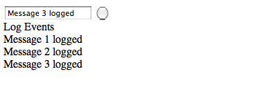

To get a simple Bronson example up and running simply create a simple html page with jQuery and RequireJS loaded and then require Bronson. We'll create a module shortly to load.
{% highlight html %}It's usually best practice to put your RequireJS configuration settings in a separate file named require-conf.js or something similar.
{% highlight javascript %} require.config({ baseUrl: '.', paths: { 'jquery' : 'javascripts/vendor/jquery/jquery', 'bronson' : 'javascripts/vendor/bronson/bronson' }, waitSeconds: 30 }); {% endhighlight %}Now we must create the module we are trying to load above. The module you create must be wrapped in a requireJS define block and should map it's external dependencies. Next we extend the Bronson.Module base class to give us access to the load, start, stop and unload methods. The example we are creating here is a simple logging module. It will listen for log events and simply append the message to the DOM element passed to it in the loadModule method above.
{% highlight coffeescript %} define [ 'jquery', 'bronson' ], ($, Bronson) -> class Logger extends Bronson.Module constructor: (parameters={}) -> @el = parameters.el super load: -> # Listen for all global events Bronson.Api.subscribe 'logger', 'logevent', (event) => $(@el).append "Finally let's revisit the HTML page and add a simple form to enter logging events and publish them to the logging module.
{% highlight html %}In the end you should see something like the following image.
